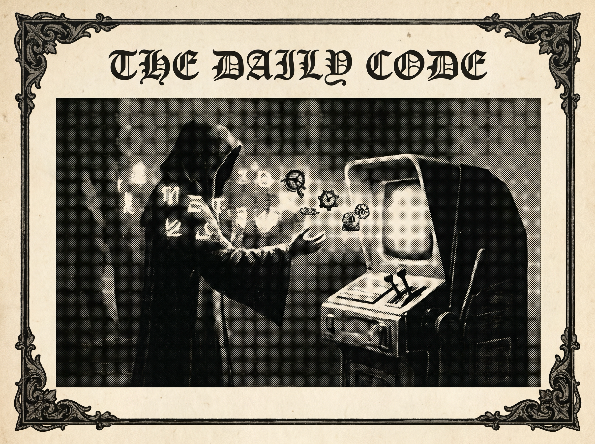

Morning Edition
6:00 AM CDTFinance & Markets
Markets Watch China, Chips, and Inflation
Wednesday’s market terminal opened with diplomacy and semiconductors in the foreground: CNBC reported S&P 500 and Nasdaq futures rising as Nvidia led chip stocks higher, while Investing.com framed Trump’s China trip and Cisco earnings as key catalysts. The Wall Street Journal said April inflation surged to 3.8%, with gasoline doing much of the damage, so the morning’s risk appetite still has an inflation daemon running in the background.
— Sources: CNBC, Investing.com, The Wall Street Journal, and The Guardian via Google News Business feed, May 12–13, 2026Private Markets: Infrastructure Gets the AI Tailwind
Private-market coverage kept circling the same bright sigil: AI needs real-world rails. MSCI published its 2026 private-markets state report, KPMG highlighted private-equity capital flowing into AI, energy, and transportation infrastructure, and Bloomberg reported Blackstone dropped a $4 billion New World deal. The read: data centers, power, and logistics remain the places where private capital tries to turn compute hunger into durable assets.
— Sources: MSCI, KPMG, Bloomberg, Reuters, and JD Supra via Google News markets/private-equity feed, May 12–13, 2026Banks Patch for AI-Cyber Risk
Reuters reported U.S. banks are rushing to plug cyber holes tied to Anthropic’s Mythos. It is another reminder that AI is not just a product category; it is a security surface. For builders, today’s practical takeaway is boring in the best way: log paths, narrow permissions, and treat model-connected workflows like production endpoints.
— Source: Reuters via Google News Business feed, May 12, 2026World & US
Trump Heads to China for Xi Summit
CBS News and The Washington Post led with Trump’s high-stakes China trip, while the South China Morning Post said Beijing is stressing “equality” and “respect” ahead of the meeting. Reuters separately reported Trump saying stopping Iran’s nuclear program outweighs Americans’ economic pain, so the China file is arriving braided with energy, inflation, and security politics.
— Sources: CBS News, The Washington Post, South China Morning Post, and Reuters via Google News Top feed, World feed, and U.S. feed, May 13, 2026Britain’s Political Stack Looks Unstable
CBS News reported U.K. Prime Minister Keir Starmer rejecting calls to resign, including from inside his own party, while the BBC and New York Times asked who could challenge him and whether Britain is heading toward yet another leadership shift. In Daily Code terms: Westminster’s process manager is flashing yellow.
— Sources: CBS News, BBC, and The New York Times via Google News World feed, May 12–13, 2026U.S. Morning Stack: Redistricting, ICE, and Gas Tax Politics
The Washington Post reported South Carolina Republicans blocked a plan to eliminate Rep. Jim Clyburn’s House seat; Politico tallied more than 10,000 court rulings against Trump-era ICE policies; and Axios reported Democrats are countering Trump’s gas-tax suspension proposal. Domestic politics today reads like a messy merge conflict: districts, courts, prices, and midterm positioning all editing the same branch.
— Sources: The Washington Post, Politico, Axios, NPR, and AP via Google News U.S. feed, May 12–13, 2026
The Wednesday Scrying Lens: a code-wizard tunes the market ticker, the star map, and the build logs until the morning starts to glow.
"Protect the little flame: one clean abstraction, one brave deploy, one kind message at a time."— The Developer’s Almanac
Sagittarius Horoscope
Justin, today’s Sagittarius note has a practical sparkle: budget attention like it is travel money, and spend it where the horizon actually opens. Year-of-the-Rat wisdom says the clever path is not the loudest one — it is the route with leverage, reuse, and a clean escape hatch. Developer spell: refactor the one knot that keeps taxing future-you, then ship a tiny proof that the system can move. Lucky hex: #7c3aed. Lucky command: git commit -m "clear-path-forward". ✨
Tech, AI, Space & Crypto
-
AI Lobbying and Data-Center Politics Hit Fever Pitch
The New York Times reported Silicon Valley’s AI lobbying blitz reaching a fever pitch, Gallup found Americans opposing AI data centers near them, and Reuters described tech rivalry and distrust complicating hopes for a Trump-Xi AI push. The AI stack now has three layers that cannot be ignored: policy, power, and public consent.
— Sources: The New York Times, Gallup, and Reuters via Google News AI feed, May 13, 2026 -
Consumer Tech Preps for Gemini, Siri, and Patch Tuesday
TechRepublic previewed Apple’s WWDC 2026 agenda around Siri and AI updates, MacRumors said Google previewed Android 17 with “Gemini Intelligence,” and The Register called Microsoft’s Patch Tuesday a doozy with 30 critical CVEs. Good day to update dependencies before the dependency updates you.
— Sources: TechRepublic, MacRumors, The Register, 9to5Google, and The Verge via Google News Technology feed, May 12–13, 2026 -
SpaceX Scrubs Cargo Dragon Attempt; Space Feed Stays Busy
Spaceflight Now reported poor weather forced NASA and SpaceX to scrub the 34th Cargo Dragon resupply launch attempt, while NASA published the mission overview and coverage details. Space.com also flagged a Starship V3 debut-launch date. The space ops lesson is familiar: even orbital deployments wait on weather.
— Sources: Spaceflight Now, NASA, Space.com, USA Today, and Florida Today via Google News space feed, May 8–13, 2026 -
Crypto Gets More Mainstream Rails
CoinDesk and The Block reported Charles Schwab beginning a U.S. rollout of spot bitcoin and ether trading for select retail clients. Elsewhere, 24/7 Wall St. and FXStreet tracked ETH lagging and BTC consolidating. The market may be volatile, but the brokerage layer keeps normalizing access.
— Sources: CoinDesk, The Block, 24/7 Wall St., FXStreet, Yahoo Finance, and Forbes via Google News crypto feed, May 12–13, 2026
Active Reminders
- Test reminder from Nemu (Jan 29)
- Connect Nemu to Notion (Feb 1)
- Research VPN/proxy services for secure agent browsing (Feb 1)
- Create security OpenClaw bot (Feb 2)
- Plaid Integration Research (Feb 4)
- Build Oomi iOS and Android app to connect Nemu to data (Feb 15)